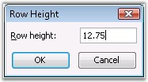
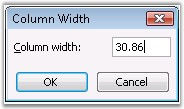
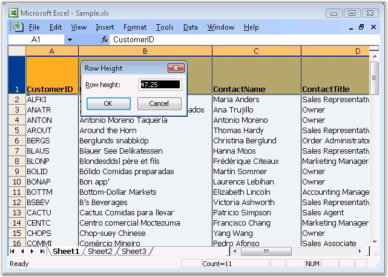
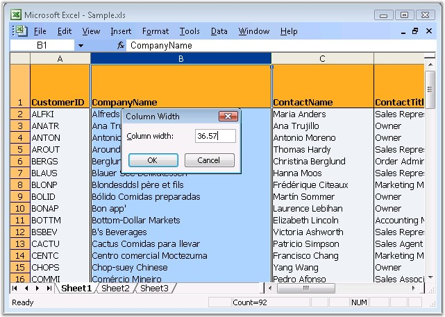
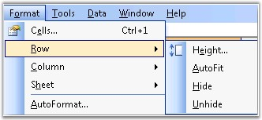

This section deals with customizing the cell width and height as per the users needs. There are two ways to change the cell size. They are as follows.
· Changing the row height and column width manually, with the values specified.
· Changing the row height and column width automatically, to fit the text into the cell.
This is discussed in the following topics.
MS Excel allows to set the row height and column width by using the Format menu option. Go to the Format menu, click Row/Column and then click Height/Width option.
 
Figure 61: Row Height and Column Width dialog boxes in Excel
Specifying Row Height and Column Width in XlsIO
XlsIO allows to specify a column width of 0 to 255 in a spreadsheet. This value represents the number of characters that can be displayed in a cell that is formatted with the standard font. The default column width is 8.43 characters, which is the default value of MS Excel. If a column has a width of 0, the column is hidden.
Similarly, you can specify a row height of 0 to 409. Note that this is the restriction of MS Excel. This value represents the height measurement in points (1 point equals approximately 1/72 inch or 0.035 cm). The default row height is 12.75 points. If a row has a height of 0, the row is hidden.
XlsIO provides support for setting the RowHeight and ColumnWidth properties in a worksheet. You can also set the column width and row height in pixels, by using the IWorksheet.SetColumnWidthInPixel and IWorksheet.SetRowHeightInPixel methods respectively.
|
[C#]
// Changing the Column Width. sheet.Range["A1"].ColumnWidth = 20; sheet.Range["B1"].ColumnWidth = 30; sheet.Range["C1"].ColumnWidth = 40; sheet.Range["D1"].ColumnWidth = 50;
// Changing the Row Height. sheet.Range["A2"].RowHeight = 20; sheet.Range["A4"].RowHeight = 35; sheet.Range["A5"].RowHeight = 50; sheet.Range["A7"].RowHeight = 60; |
|
[VB.NET]
' Changing the Column Width. sheet.Range("A1").ColumnWidth = 20 sheet.Range("B1").ColumnWidth = 30 sheet.Range("C1").ColumnWidth = 40 sheet.Range("D1").ColumnWidth = 50
' Changing the Row Height. sheet.Range("A2").RowHeight = 20 sheet.Range("A4").RowHeight = 35 sheet.Range("A5").RowHeight = 50 sheet.Range("A7").RowHeight = 60 |

Figure 62: Setting row height in XlsIO

Figure 63: Setting column width in XlsIO
AutoFit is the option in MS Excel that can be enabled or disabled through the Format menu. AutoFit is the name given to the automatic width (or height) adjustment, to fit the contents of a cell, row or column.

Figure 64: AutoFit in Excel
XlsIO also provides support to autofit the contents in a worksheet. You can autofit a range of cells, or a single column/row, or autofit within the given range.
This section demonstrates various autofit techniques supported by XlsIO.
AutoFit Single Row/Column
XlsIO allows to resize the cells in a column or row, based on the row/column index given. Following code example illustrates autofitting a single row/column.
|
[C#]
sheet.Range["E1"].Text = "This is the Long Text";
// AutoFit applied to a Single Column. sheet.AutofitColumn(5);
// AutoFit applied to a Single Row. sheet.AutofitRow(1); |
|
[VB.NET]
sheet.Range("E1").Text = "This is the Long Text"
' AutoFit applied to a Single Column. sheet.AutofitColumn(5)
' AutoFit applied to a Single Row. sheet.AutofitRow(1) |
 Note: These indexes are "one based".
Note: These indexes are "one based".
You can also autofit single row/column as follows.
|
[C#]
sheet.Rows[0].AutofitRows(); sheet.Columns[0].AutofitColumns(); |
|
[VB.NET]
sheet.Rows[0].AutofitRows() sheet.Columns[0].AutofitColumns() |
Note: Here column and row indexes are "zero
based".
AutoFit Multiple Rows/Columns
It is also possible to autofit multiple rows/column based on the range specified as follows.
|
[C#]
// Entering text inside the Cells. sheet.Range["A1:D1"].Text = "This is the Long Text"; sheet.Range["E1"].Text = "This is the Long Text"; sheet.Range["A2:A5"].Text = "This is the Long Text using Autofit Columns and Rows";
// AutoFit Applied to a Range. sheet.Range["A1:D1"].AutofitColumns(); sheet.Range["A2:A5"].AutofitRows();
//Autofits all the columns used in the worksheet. sheet.UsedRange.AutofitColumns(); |
|
[VB.NET]
' Entering text inside the Cells. sheet.Range("A1:D1").Text = "This is the Long Text" sheet.Range("E1").Text = "This is the Long Text" sheet.Range("A2:A5").Text = "This is the Long Text using Autofit Columns and Rows"
' AutoFit Applied to a Range . sheet.Range("A1:D1").AutofitColumns() sheet.Range("A2:A5").AutofitRows()
'Autofits all the columns used in the worksheet. sheet.UsedRange.AutofitColumns() |
AutoFit within a Range of Cells
XlsIO also allows to autofit a row/column based on the content in a range of cells within the cells.
|
// AutoFit columns within a Range. IWorksheet.Range[int startRow, int startColumn, int lastRow, int lastColumn].AutofitColumns()
// AutoFit rows within a Range. IWorksheet.Range[int startRow, int startColumn, int lastRow, int lastColumn].AutofitRows(); |
Following code example illustrates autofitting within a range of cells.
|
[C#]
// Entering text inside the Cells. sheet.Range[B2:I20].Text = "Autofit"; sheet.Range[1, 2].Value = "A very long text, This should be ignored by mySheet.Range[5, 2, 19, 2].AutofitColumns()"; sheet.Rows[4].RowHeight = 90; sheet.Rows[15].RowHeight = 90;
// AutoFit columns applied within a Range. mySheet.Range[5, 2, 19, 2].AutofitColumns();
// AutoFit rows applied within a Range. mySheet.Range[5, 2, 13, 4].AutofitRows(); |
|
[VB.NET]
' Entering text inside the Cells. sheet.Range[B2:I20].Text = "Autofit" sheet.Range[1, 2].Value = "A very long text, This should be ignored by mySheet.Range[5, 2, 19, 2].AutofitColumns()" sheet.Rows[4].RowHeight = 90 sheet.Rows[15].RowHeight = 90
' AutoFit columns applied within a Range. mySheet.Range[5, 2, 19, 2].AutofitColumns()
' AutoFit rows applied within a Range. mySheet.Range[5, 2, 13, 4].AutofitRows() |
Here, though the cell "B2" has long text, autofit will not be applied to this column as the cell inside the range[5, 2, 19, 2] has text smaller than that. Similarly, row height for Row 15 will not be affected with AutoFit rows as the range[5, 2, 13, 4] has row height smaller than Row 15.
Note:
1) If a Range text is text wrapped, AutoFitColumn method will not be applied on it.
2) If a Range is merged, AutoFit methods will not be applied on it. Note that this is the behavior of MS Word.
3) Implementation of AutoFit methods are more time consuming. Use these methods in minimal for better performance.